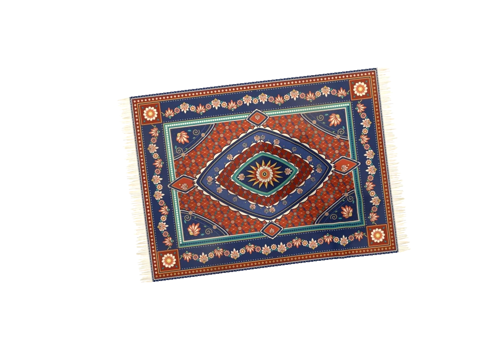
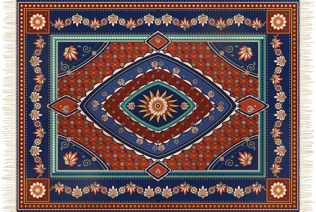

Sweep your desktop under the rug.
A movable, foldable rug for your Windows desktop. Cover the clutter, then hold Control to reach your files.
Buy for $1 See how to set it up
Flat rug. Drag the preview, or use the move buttons.
Rug states rendered by the Windows app. This preview moves images; cloth physics runs in the desktop app.
Pick up a corner.
Drag to move or fold the fabric. The rug settles over bumps where your desktop icons sit.
Roll it out of the way.
Double-click to roll the rug into a tube. Double-click again to lay it back down.
Your files are still there.
Hold Ctrl to make the rug translucent and click through to your icons. Files stay in place.
Watch Kilim in action.
A real Windows desktop, a little cloth physics, and room to play.
A different rug for every desktop.
Fifteen patterns are included. Choose a favourite, or weave your own picture into a rug inside the app.

Kashan — included in the app
Make it yours: pick a local image from the tray menu. Adjust the size, switch the light from day to night, and turn the fabric sounds on or off.
Give your desktop a rug.
Buy through Polar for 64-bit Intel/AMD Windows 10 or 11. Your purchase includes the complete ZIP and a licence key for one PC and Windows user. The runtime is included.
Buy for $1Beta 0.3.0 · ZIP · 65.3 MiB · Built 8 October 2026
Already bought it? Open your Polar purchases for your download and key.
Internet is required at activation, every launch and licence checks every 30 minutes. This independent beta is unsigned; Windows may display an unknown-publisher warning. ARM64 compatibility has not been tested.
Three small steps.
- Buy and download from Polar.Your purchases page provides the ZIP and licence key.
- Extract the entire ZIP.Keep the artwork and executable together.
- Open and activate Kilim.Paste your key, then find the tray icon for settings and Quit.
A few things before you unfold it.
Simple answers, with a setup guide if you need more.
Does it move or delete my files?
No. The rug covers the desktop icons visually. Your files remain where they are, and holding Control lets you click through.
What does the $1 purchase include?
A one-time US$1 purchase through Polar provides the Windows ZIP and a licence key with one activation. The key has no expiry. The runtime, fifteen rug patterns and custom-picture option are included. Any applicable tax is shown at checkout.
Can I move it to another PC?
Yes. Choose Deactivate this PC in the tray, or manage devices in your Polar purchases, before activating another PC. Each key has one slot, bound to a PC and Windows user.
Does it need internet?
Yes, for activation, every launch and licence checks every 30 minutes. If a check cannot confirm the licence, the rug closes. Reconnect and reopen Kilim to retry. Custom pictures and desktop files stay on your PC.
Do I need to install .NET?
No. This download includes the runtime. Extract the whole ZIP and run Kilim.Windows.exe. You do not need administrator access.
Where are the app controls?
In the system tray near the clock. The icon may be inside the hidden-icons arrow. Right-click it to change the rug or quit the app.
Why does Windows show a warning?
The beta executable has not been code-signed. Windows may identify the publisher as unknown. Check the release information and SHA-256 before deciding whether to run a download.
Is this the original Kilim app?
This is an unofficial Windows adaptation. Yusuf Yılmaz's original Kilim is a macOS app; its cloth simulation and rug artwork are reused under the MIT licence.
How do I remove it?
Deactivate this PC to release the licence slot, turn off launch at sign-in if enabled, quit and delete the extracted folder. The setup guide explains how to remove saved preferences too.